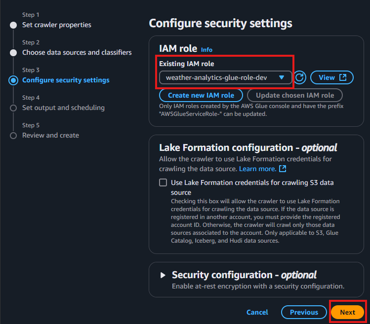
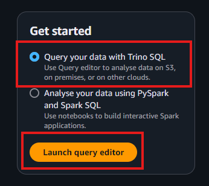
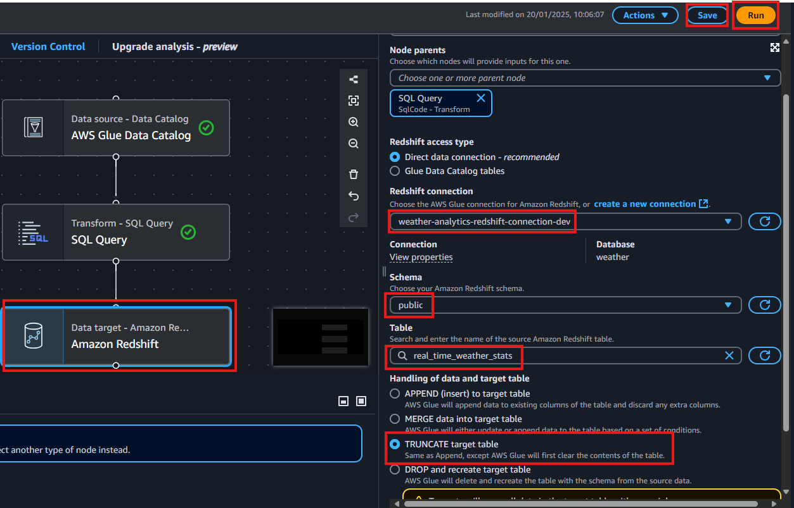
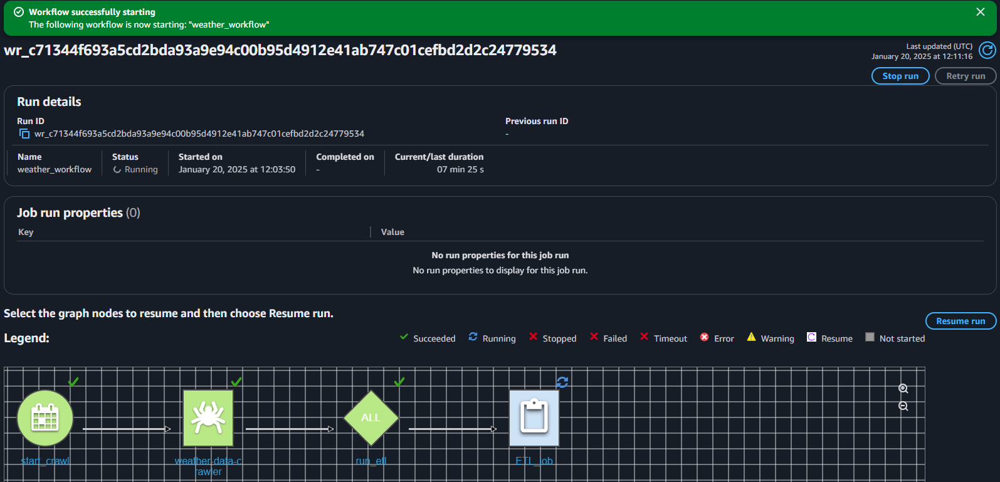
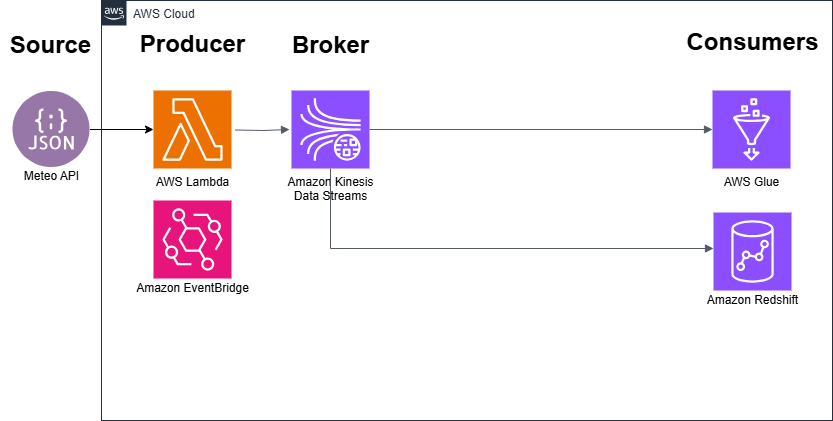

Data Engineer Workshop 9: Advanced Stream Processing Pipelines#
Introduction#
üß± Building on Previous Workshops: From On-Demand to Batch and Streaming#
Our workshop journey so far through different data processing patterns has prepared us for today’s exploration of streaming architectures.
In Workshop 5, we learned how to make data rapidly available for analysts using AWS cloud services. We transformed CSV files into optimised Parquet format, used Glue to automatically discover and catalogue data structures, and enabled quick analysis through Athena’s serverless querying.
Workshop 7 then introduced the challenges of keeping analytical data current as source systems change. Using the Sakila DVD rental database, we built automated pipelines in Azure Synapse to detect changes in our OLTP data source and update our dimensional model (the customer dimension).
Today, we can combine these practical insights as we move from periodic batch processing to continuous streaming. So instead of waiting to gather changes and process them on a schedule (e.g. daily, weekly, monthly), we’ll build a pipeline that can processes weather data from an API in real-time as it arrives.
Our new streaming architecture will:
Ingest data continuously through Kinesis streams (versus periodic batch loads in Workshop 5)
Process records immediately as they arrive (versus scheduled updates)
Enable multiple downstream consumers to analyse the same data stream
Support both real-time analytics and historical querying
This approach particularly suits use cases where data freshness is a key businesss requirement, like monitoring weather conditions, tracking financial transactions, or analysing Internet of Things (IoT) sensor data (e.g. monitoring vibration sensors on factory equipment that need to detect and report dangerous oscillations within seconds to prevent catastrophic machine failures).
As you work through today’s exercises, consider how streaming might complement the batch processing patterns you’ve already learned, and when each approach might be most appropriate for your own organisation or even your project.
⁉️ Should we really be streaming data?#
While streaming architectures can help answer “what’s happening right now?” versus historical “what happened?” analysis, it’s important to carefully evaluate whether real-time data serves a genuine business need. Consider:
Business Value: Does real-time insight enable better decision-making or customer experience that justifies the additional complexity?
True Requirements: If your stakeholders request “real-time” data, would near real-time or daily batch updates suffice?
Cost-Benefit Analysis: Streaming architectures can introduce complexity we will encounter directly in the workshop exercises. While the examples of complexity below may not be immediately clear now, some will become concrete as you build and test each component of our weather streaming data pipeline:
Error handling and recovery (e.g. handling failed API calls to the weather service, managing retry logic for Kinesis stream failures, dealing with Lambda function timeouts)
Data consistency and ordering (e.g. ensuring weather readings from different cities arrive in the correct chronological order, handling duplicate temperature measurements from multiple collections of the same reading)
Infrastructure management (e.g. monitoring Kinesis stream throughput capacity, managing Lambda concurrency limits, scaling Firehose delivery performance)
Monitoring and alerting (e.g. tracking end-to-end latency from weather measurement time to Redshift availability, detecting gaps in city data collection, alerting on abnormal temperature variations)
Alternative Approaches: Could simpler solutions work?
On-demand updates (Workshop 5)
Scheduled batch processing (Workshop 7)
More frequent but still batch-based loads
As Zach Wilson provocatively notes in this X post: “Stop building streaming pipelines when your stakeholders request ‘real time’ data!”

This afternoon, as well as reflecting on the practical exercises here we’ll explore how to evaluate these tradeoffs for your specific project needs and stakeholder requirements.
ü§ù Alignment with Data Engineer Pass Descriptors#
Note
This workshop aligns with several IFATE Data Engineer Pass Descriptors: https://www.instituteforapprenticeships.org/apprenticeship-standards/data-engineer-v1-0
Click here to review more detail
Describes how they use data ingestion frameworks such as streaming, batching and on demand services to move data from one location to another in order to optimise data ingestion processes. (K18, S15)
We focus on streaming and this workshop demonstrate different kinds of streaming patterns and consider their optimisation and business uses.Describes the types and uses of data engineering tools in their own organisation and how they apply them. (K20)
This workshop covers multiple AWS data engineering tools that represent common architectural patterns you’ll find across different cloud platforms and on-premises solutions. By understanding these core patterns, you can be better equipped to understand and describe equivalent tools in your own organisation, whether they use AWS, Azure, Google Cloud, or open-source alternatives like Kafka. Here are the AWS tools we will use and their equivalents from other providers.AWS Lambda: Functions as a Service: A serverless compute service that lets us run code without having to provision a server. If your organisation uses Azure Functions, or Google Cloud Functions you’ll find the concepts very similar.
Amazon EventBridge: Event Orchestration Service: A serverless “event bus” that makes it easy to connect applications together using data from your own applications. Think of it like a smart postal sorting office for your data. Just as a postal service routes packages to their correct destinations based on addresses, EventBridge routes data “packages” (events) to the right applications based on rules you define. For example, in our workshop, it’s what makes sure our Lambda function gets “woken up” every minute to collect new weather data. While your organisation might use Azure Event Grid, Google Cloud Pub/Sub, or Apache Kafka for event orchestration, the fundamental patterns of event-driven architecture remain the same.
Amazon Kinesis Data Stream: Streaming Broker: A massively scalable and durable real-time data streaming service. Think of it as a continuously flowing river of data that can handle hundreds of terabytes of data per hour from multiple sources! The patterns you learn here apply equally to Azure Event Hubs, Google Cloud Pub/Sub streams, or Apache Kafka topics.
Amazon Kinesis Firehose: Streaming Consumer: A fully managed service that reliably loads streaming data into data lakes, data stores, and analytics services. These concepts map directly to services like Azure Stream Analytics, Google Cloud Dataflow, or Kafka Connect in your organisation.
AWS Glue: Serverless ETL Service A fully managed extract, transform, and load (ETL) service that makes it easy to prepare and load your data for analytics. Whether your organisation uses Azure Data Factory, Google Cloud Dataflow, or Apache NiFi, the ETL principles remain consistent.
Amazon Athena: Serverless Query Service: An interactive query service that makes it easy to analyse data directly in Amazon S3 using standard SQL. Your organization might use Azure Synapse Analytics serverless SQL pools (we used these in workshop 7) or Google BigQuery, but the concept of serverless SQL querying is universal.
Amazon Redshift: Cloud Data Warehouse: A fully managed, OLAP data warehouse service. While your organisation might use Azure Synapse Analytics dedicated SQL pools (we used these in workshop 7), Google BigQuery, or Snowflake, the fundamental concepts of cloud data warehousing remain the same.
These services work together to create a comprehensive data engineering pipeline: EventBridge triggerers the Lambda function, which can process data and send it to Kinesis Streams. Firehose can then load this data into S3, where it can be cataloged by Glue, queried by Athena, and eventually loaded into Redshift for complex analytics! We will do all this together!
Explains the deployment approaches processes for new data pipelines and automated processes. (K8)
In this workshop we will walk through the complete deployment of a real-time weather data pipeline in a learning environment, using an infrastructure-as-code approach with CloudFormation. The pipeline flows through these key layers:
✨ 1. PRODUCER: Lambda function collects weather data via API
üîª
➡️➡️➡️ 2. BROKER: Kinesis Data Stream buffers real-time data
üîª
üì© 3. DELIVERY: Kinesis Firehose manages delivery
üîª
ü™£ 4. SINK/STORAGE: S3 data lake with smart partitioning
üîª
üìà 5. PROCESSING/ANALYTICS: Glue for processing, Athena for querying, Redshift for warehousingIn Going Further, there is an exercise to automate and orchestrate this entire flow through Glue Workflows, demonstrating how to coordinate data ingestion, transformation, and loading processes in a systematic way. Note we will consider orchestration practically and in more detail in Workshop 10.
Demonstrates how they used security, scalability and governance when automating data pipelines using programming languages and data integration platforms with graphical user interfaces. (K13, S4)
While this workshop uses purposefully permissive security settings (public subnets, broad IAM roles, simplified authentication) to facilitate learning, we will later emphasise how these would need to be hardened for production use, such as implementing private subnets with NAT Gateways, restrictive security groups, and AWS Secrets Manager for credentials.
Don’t worry if some of these terms sound unfamiliar or complex, they’re just specific tools that help with security and are typically handled by cloud security engineers and infrastructure teams working alongside data engineers to ensure both security and performance. The main point being that all these technical controls serve one clear purpose: to ensure your data only flows exactly where it should, is only accessed by exactly who should access it, and remains protected at every step of its journey through your pipeline.
üå¨Ô∏è Today‚Äôs Workshop Scenario and Objectives#
Real-time weather monitoring is essential for many industries. Consider these business use cases for streaming weather data:
Wind Energy: Wind farm operators need immediate temperature alerts to prevent turbine damage and optimise power generation. When temperatures exceed 35°C, they must quickly adjust operations to prevent overheating of mechanical components. Historical temperature analysis helps schedule maintenance during optimal weather windows, potentially saving millions in repair costs.
Transportation: Railway operators monitor temperature changes across thousands of miles of track, as sudden temperature variations can compromise rail integrity. Their monitoring systems must detect concerning temperature gradients in real-time while building historical analysis to identify vulnerable sections requiring extra monitoring.
Retail: Major supermarket chains adjust inventory and staffing based on temperature forecasts and real-time conditions. A sudden temperature spike can drive demand for certain products up by 300%, requiring rapid supply chain adjustments based on both current readings and historical sales patterns.
Smart Buildings: Modern commercial buildings use temperature data streams to automatically optimize HVAC operations (Heating, ventilation, and air conditioning), typically achieving 30-50% energy savings through real-time adjustments and predictive optimisation based on historical patterns. This requires both immediate response to current conditions and analysis of long-term temperature trends.
For our workshop, we’ll focus on wind energy, where weather data directly impacts operations and revenue. As noted in “The Impact of Weather on Wind Farms” (2024): https://www.infoplaza.com/en/blog/the-impact-of-weather-on-wind-farms
“The power output of a turbine is related to density, which is a function of altitude, pressure, and also temperature. Dense air (which comes with lower temperatures) exerts more force on the rotors, resulting in a higher power output, even at relatively lower wind speeds compared to warmer and less dense air.”
A wind farm operator has approached you to prototype a real-time temperature monitoring system. While their production system will need to monitor hundreds of turbine locations and track multiple weather parameters (temperature, wind speed, humidity), they want to start with a proof-of-concept using just temperature data from three cities to validate the approach. This temperature monitoring is needed as “extreme heat can cause overheating of the turbine’s electrical and mechanical components as well as lubrication systems, potentially leading to shutdowns and increased maintenance costs.”
This represents a typical project progression that you learned about in module 9.1 From Prototype to Production: Implementing Data Solutions.
Scoping (Current): We’ve identified the core requirements: tracking temperature variations that could impact turbine performance and maintenance scheduling.
Prototype (This Workshop): Building a working demo with 3 locations using AWS services to get rapid stakeholder feedback.
Development: Will expand to all turbine locations using exact Lat and Lon co-ordinates, add wind speed and humidity monitoring, implement production-grade security, and integrate with turbine control systems.
Production: Full deployment with comprehensive monitoring, automated scaling, and disaster recovery
Continuous Improvement: Regular evaluation of performance, costs, and new requirements
Using AWS’s serverless and streaming services, we’ll build this initial prototype. By the end of this workshop, you will have:
Set up a complete data streaming infrastructure using CloudFormation
Created an automated data collection system that pulls weather data every minute using Lambda
Built a resilient streaming pipeline using Kinesis services
Developed a streaming pipeline that:
Processes weather readings from three UK cities (expandable to more locations)
Automatically partitions data by location and time for efficient querying
Tested the pipeline by:
Monitoring real-time data flows through CloudWatch
Querying historical weather patterns using Athena
Creating analytical views for temperature trend analysis
This workshop will provide practical experience with: - Infrastructure-as-code deployment using CloudFormation - Real-time data collection using Lambda and EventBridge - Stream processing with Kinesis Data Streams and Firehose - Data lake organisation and partitioning strategies - SQL analytics using Athena and Redshift - ETL workflow automation / orchestration using AWS Glue
In this prototype, your pipeline will perform two main operations:
Real-time Processing: Continuously collect and stream temperature data from multiple locations, helping operators monitor conditions that could impact turbine performance.
Historical Analytics: Automatically organise historical weather data in the data lake for analysing temperature patterns and optimising maintenance schedules.
By the end of the workshop, you will have built this architecture:
⚙️ Task 1: Configuring the Development Environment#
In Task 1 we set up the development environment for our prototype where weather data streaming and analytics can take place. This involves deploying a comprehensive AWS infrastructure using CloudFormation, which will create multiple interconnected services including a data ingestion pipeline (Lambda and Kinesis), storage layer (S3 data lake), and foundational analytics services (Redshift cluster and Glue database).
Start an ACG AWS sandbox:
Use this link and start
AWS Sandbox - Defaultand log in: https://learn.acloud.guru/cloud-playground/cloud-sandboxes

Deploy AWS CloudFormation template:
Once logged in search for
CloudFormation.At the top, click on the far right drop down
Create stackand selectWith new resources (standard)At
Step 1: Create Stackcopy and paste this URLhttps://da5corndel.s3.eu-west-2.amazonaws.com/CloudFormation_streaming.yamlinto theAmazon S3 URLbox and clickNext.At
Step 2: Specify stack details, many parameters are already complete so do not need to be changed. Your only task is to complete theProvide a stack namefield. This name will dynamically generate resource names based on the stack name you provide. To simplify, usestream(all lowercase) as the stack name. Then, clickNext.At
Step 3: Configure stack optionsscroll down to the bottom of the page then simply tick the check box next to the statement:I acknowledge that AWS CloudFormation might create IAM resources with customised names.then clickNext.At
Step 4: Configure stack options, scroll to the bottom of the page and click theSubmitbutton. Your stack (we calledstream) will now deploy and will showℹ CREATE_IN_PROGRESSwhile it deploys. After about 3 minutes it should show the messageℹ CREATE_COMPLETE.
While the template is deploying, click here to access helpful information and troubleshooting tips we recommend reading.
Note
⌛ Your ACG Azure sandbox will automatically shut down and its data will be deleted after four hours. You will receive a notification one hour before the sandbox expires, allowing you to extend it for an additional four hours. Please plan your work accordingly to avoid disruptions.
Note
üîÉ If you encounter deployment issues or want to start fresh, we recommend deleting the entire sandbox from the ACG playground rather than individual resources or the CloudFormation stack. This is faster and ensures a clean slate for redeployment.
The CloudFormation stack includes retention settings for resources like S3 buckets to avoid accidental data loss, and deletion can take 15–20 minutes due to dependencies between components (e.g. Lambda, Kinesis, Redshift). If you must delete the stack, empty S3 buckets manually first, as their deletion protection will block the process.
Note
⛔ When using AWS Glue, your ACG sandbox may shut down due to exceeding Glue DPU (Data Processing Unit) limits. You’ll receive an email titled “Your Hands-On Lab or Cloud Playground has been shut down,” explaining the suspension due to excessive DPU usage.
AWS Glue jobs, being Spark-based, provision distributed computing environments even for small tasks, which can quickly hit ACG’s limits designed to prevent runaway costs. This restriction is a helpful reminder of resource management in data processing.
If your sandbox is suspended, don’t worry, this is part of learning to use powerful tools like AWS Glue. Simply start a new sandbox and redeploy the CloudFormation template, which will be ready in 3–4 minutes. Learn more about Glue DPUs and optimisation here: https://docs.aws.amazon.com/glue/latest/dg/monitor-debug-capacity.html
Note
⌚ Using an AWS CloudFormation template in this workshop automates the deployment of our entire streaming analytics architecture through infrastructure-as-code (IaC). The template provisions and configures network infrastructure (VPC, subnets, gateways), security components (IAM roles, security groups), and all required services (Lambda, Kinesis, S3, Redshift, Glue) with appropriate permissions and connections between them.
For learning purposes, the template uses simplified security settings: public subnets instead of private ones, basic authentication rather than AWS Secrets Manager, and permissive security group rules that allow broad access. A production environment would need significant hardening, including private subnets with NAT gateways, strict security controls, and high-availability configurations.
Learn more about CloudFormation templates here: https://docs.aws.amazon.com/AWSCloudFormation/latest/UserGuide/Welcome.html
How to explore your stack
Outputs
Once your stack shows
ℹ CREATE_COMPLETE, click on theOutputstab. This is a set of URLs created by the deployment for the key resources you will use in this workshop. Ideally keep this page open during the workhsop so you can come back here and easily navigate to different parts of the application.Let’s start by simply opening the S3 bucket that will be our data lake. Right click on the URL to the right of the key
DataLakeBucketURLand selectOpen link in new tab. This will open the S3 bucket used to store streamed weather data in this application.
Great, now that you know how to quickly navigate key resources in this data streaming application, in the next section we will open and explore key resources in a logical order across this architecture, beginning with the Producer!!
üó∫Ô∏è Task 2: Explore and understand your streaming application so far#
In this task, we will systematically explore the core data processing pipeline that has been provisioned for you. You’ll examine how weather data flows through these different layers:
✨ 1. PRODUCER: Lambda function collects weather data via API
üîª
➡️➡️➡️ 2. BROKER: Kinesis Data Stream buffers real-time data
üîª
üì© 3. DELIVERY: Kinesis Firehose manages delivery
üîª
ü™£ 4. SINK/STORAGE: S3 data lake with smart partitioning
üîª
üìà 5. PROCESSING/ANALYTICS: Glue for processing, Athena for querying, Redshift for warehousing
✨ 1 PRODUCER: Explore the Data Producer (Lambda Function):#
This represents the start where real-time weather data enters our system. The combination of Lambda and EventBridge creates a reliable, serverless data collection mechanism that will continuously feed data into our streaming pipeline. Let’s explore them.
First, from your CloudFormation
Outputstab, locate theLambdaFunctionURLand open it in a new tab.This Lambda function serves as our data producer - think of it as an automated weather station that collects and reports data every minute.
Note
We’re using the Open-Meteo Weather API (https://open-meteo.com/) to simulate collecting temperature data from our wind turbine locations. In a real wind farm, each turbine would have its own temperature sensors feeding data directly into our pipeline, but for learning purposes, we’re using this public weather API as a reliable source of real-time temperature data for our three “turbine sites” (London, Manchester, and Edinburgh).
We chose this API deliberately for our workshop because it provides free weather data without requiring authentication or API keys. This means our application starts collecting temperature readings immediately, letting us focus on learning how to process and analyze streaming data. In a production wind farm, you’d need to handle sensor authentication, data validation, and careful rate limiting to ensure you don’t miss any critical temperature readings that could indicate potential turbine issues.
While the API offers many weather parameters (which you can explore at https://open-meteo.com/en/docs), we’re focusing solely on temperature data for this prototype. This mirrors good development practice: start simple with one essential metric (temperature, which directly affects turbine performance and maintenance needs), then expand to include other parameters like wind speed and humidity once the basic pipeline is working well. We’ll explore these considerations around scaling up data collection, along with proper API security and management, in Workshop 13: ‘Integrating API Data Sources’.
Let’s examine how our Lambda function works to collect and stream weather data. The function code shown below in full serves as our “weather station,” regularly checking temperatures at our wind farm locations.
The function uses Python and relies on two key tools:
It uses the Open-Meteo API to collect weather data
It uses
boto3(which is AWS’s Python software development kit - think of it as Python’s way of talking to AWS services, like a translator that lets Python and AWS understand each other) to send that data into our Kinesis stream
Here’s how the function flows, step by step:
First, it keeps a list of our “wind farm locations” - the coordinates for London, Manchester, and Edinburgh stored in a list called
locations. In a real wind farm, these would be your actual turbine coordinates.When it runs, a helper function called
fetch_weather_data()does the important job of:Calling the weather API for each location
Converting the raw weather data into a clean, structured format that includes:
The city name
The current temperature
Timestamps to track when the data was measured and collected
The main processing loop (starting with
for location in locations:) is like a continuous collection cycle:It visits each city in our locations list
Collects its current temperature data
Sends that data into our Kinesis stream, using the city name as a “partition key” (think of this like putting each city’s data in its own labeled channel)
Throughout this process, the function keeps detailed logs of what it’s doing: whether it successfully collected and sent data, or if it ran into any problems. These logs help us monitor our data collection system’s health.
üßë‚Äçüíª Clicking here to view the Python Code in the Lambda function
import json
import boto3
import urllib.request
import os
from datetime import datetime
def lambda_handler(event, context):
"""
Lambda handler that fetches weather data from Open-Meteo API and streams it to Kinesis.
The function processes multiple UK cities and structures the data for downstream analytics.
Args:
event: AWS Lambda event trigger data
context: AWS Lambda runtime information
Returns:
dict: Response containing execution status and processing summary
"""
# Initialize Kinesis client - Lambda automatically uses the correct region
kinesis_client = boto3.client('kinesis')
# Reference the Kinesis stream created by CloudFormation
stream_name = f"{os.environ['PROJECT_NAME']}-stream-{os.environ['ENVIRONMENT']}"
# Define UK cities to monitor - structured for potential expansion
locations = [
{"city": "London", "latitude": 51.5072, "longitude": -0.1276},
{"city": "Manchester", "latitude": 53.4808, "longitude": -2.2426},
{"city": "Edinburgh", "latitude": 55.9533, "longitude": -3.1883}
]
def fetch_weather_data(location):
"""
Fetches current weather data for a given location using Open-Meteo API.
Args:
location (dict): Dictionary containing city name, latitude, and longitude
Returns:
dict: Weather data including city, temperature, measurement time, and collection time
Returns None if data fetch fails
"""
base_url = "https://api.open-meteo.com/v1/forecast"
params = f"?latitude={location['latitude']}&longitude={location['longitude']}¤t_weather=true"
try:
response = urllib.request.urlopen(base_url + params)
data = json.load(response)
return {
"city": location["city"],
"temperature": data["current_weather"]["temperature"],
"measurement_time": data["current_weather"]["time"],
"collection_time": datetime.utcnow().isoformat(),
"source": "open-meteo"
}
except Exception as e:
print(f"Error fetching data for {location['city']}: {str(e)}")
return None
# Process each city and send data to Kinesis
successfully_processed = 0
failed_cities = []
for location in locations:
try:
weather_data = fetch_weather_data(location)
if weather_data:
# Log the data being sent for monitoring and debugging
print(f"Processing data for {location['city']}: {json.dumps(weather_data)}")
# Send to Kinesis stream with city as partition key
kinesis_client.put_record(
StreamName=stream_name,
Data=json.dumps(weather_data),
PartitionKey=weather_data["city"]
)
successfully_processed += 1
else:
failed_cities.append(location["city"])
except Exception as e:
error_message = f"Failed to process {location['city']}: {str(e)}"
print(error_message)
failed_cities.append(location["city"])
# Prepare detailed execution summary
response = {
"statusCode": 200,
"body": {
"message": f"Processed {successfully_processed} of {len(locations)} cities",
"successful_count": successfully_processed,
"total_cities": len(locations),
"execution_time": datetime.utcnow().isoformat()
}
}
if failed_cities:
response["body"]["failed_cities"] = failed_cities
return response
Now, let’s understand how this lambda function gets triggered automatically by an Amazon EventBridge rule:
In the
Function overviewsection, in the diagram click on theEventBridge (CloudWatch Events)then right click on the URL that now appears in theConfigurationsection as shown below. (You could also simply search forEventBridgeat the top of the page).Notice in the
Event schedulethe textFixed rate of 1 minute. Click on theEditbutton to the right and notice how in theSchedule patternyou could change the rate unit to be any number ofMinutes,HoursorDays. Or, you could also change the schedule type to be a cron expression for specific minutes, hours, day of month, month, day of week and year.
This rule acts like an automated timer, invoking our Lambda function every minute.
You can verify this by watching the CloudWatch logs for this rule where will see new entries appearing every minute. To do this:
In the search bar at the top type
CloudWatch,Then in the left hand menu of CloudWatch select from within
Logs,Log groupsthen click on the Log group called/aws/lambda/weather-analytics-producer-devFrom the list of
Log streamsclick on the container with the most recentLast event time. Expand some log entries and see if you can find entries from theSTARTandENDof one run of the Lambda function that has been triggered by the EventBridge rule you explored earlier. These markers wrap each function execution and between them you’ll see log messages showing weather data for each city. By checking the timestamps between different START entries, you can verify the function is running every minute as configured.
Note
üîé Keep an eye on the CloudWatch logs as you proceed through the workshop. They provide valuable insights into the data being collected and can help you troubleshoot any issues that arise.
Note
While this workshop uses a Lambda function to pull weather data, many real-world streaming applications instead have external systems pushing data through an API Gateway. Our Lambda approach is works well for learning as it provides reliable test data and lets us focus on stream processing concepts. However, production environments often need the additional security, access control, and data validation that API Gateway provides, especially when ingesting data from multiple external sources.
For example, in a real wind farm deployment, each turbine would likely push its sensor data to an API Gateway endpoint rather than having Lambda pull the readings. This provides better authentication, rate limiting, and the ability to validate data before it enters the stream. We’ll consider these architectural patterns more in Workshop 13: ‘Integrating API Data Sources’.
Image from AWS Solutions Library, Option 1: https://aws.amazon.com/solutions/implementations/streaming-data-solution-for-amazon-kinesis/
➡️➡️➡️ 2 BROKER: View data in the Data Stream (Kinesis):#
We saw that the lambda function pulled weather data for three cities from the weather API and streamed those to a Kinesis data stream with the following code:
kinesis_client.put_record(StreamName=stream_name, Data=json.dumps(weather_data), PartitionKey=weather_data["city"])Let’s now explore that resource to understand how this broker works.From your CloudFormation
Outputstab, locateKinesisStreamURLand open in a new tab.This Kinesis stream acts as our real-time data broker/buffer, receiving weather data from the Lambda function and temporarily storing it for downstream consumers like Kinesis Firehose. Think of it as a moving window of data that maintains records for 24 hours.
The stream uses the city name as a partition key, which is like putting each city’s data into its own dedicated lane on a highway. Just as having separate lanes prevents cars from interfering with each other’s flow, having separate partitions ensures temperature readings from London don’t get mixed up with readings from Manchester. When we set
PartitionKey=weather_data["city"], we’re telling Kinesis “keep all of London’s data together, all of Manchester’s data together, and all of Edinburgh’s data together.” This helps maintain the correct time order of temperature readings for each city.Let’s now use the Data Viewer to inspect data in our Kinesis Stream:
Select the
Data ViewertabChoose the single shard available from the
Sharddrop-downFrom
Starting Positiondrop-down, selectTrim horizonClick
Get recordsto view the most recent weather data from our cities
Note
üìÅ Our stream uses one shard because our data volume (3 cities √ó 1 record/minute = 3 records/minute) is well within a single shard‚Äôs capacity. A busier applications might need multiple shards to handle more data volume: https://docs.aws.amazon.com/streams/latest/dev/service-sizes-and-limits.html
Note
⌚Trim horizon works because it shows all records in the stream’s 24-hour retention window, letting you see historical data. Latest might not show records immediately because it only shows data that arrives after you start viewing. Since our Lambda writes once per minute, you might need to wait for the next data collection cycle to see new records.
üì© 3 DELIVERY: Examine how data is delivered to the sink (Kinesis Firehose):#
From your CloudFormation
Outputstab, locateKinesisFirehoseURLand open in a new tab.Kinesis Firehose acts as our delivery service, taking data from the Kinesis stream and preparing it for long-term storage in S3. Let’s explore its key configurations:
Click on the
weather-analytics-firehose-devdelivery streamSelect
Edit destination settingsto view the configuration details
Examine these important settings:
Dynamic Partitioning: Notice how this feature is enabled in the
Dynamic partitioningsection. It automatically organises our data in S3:Enabled with a partition key based on
cityusing the JQ expression.cityCreates a logical hierarchy in S3 using the prefix pattern you can see of:
weather-data/location=!{partitionKeyFromQuery:city}/year=!{timestamp:yyyy}/month=!{timestamp:MM}/day=!{timestamp:dd}/This pattern means data is automatically organised by city, year, month, and day
Error Handling: Notice the error output prefix:
errors/!{firehose:error-output-type}/!{timestamp:yyyy}/!{timestamp:MM}/!{timestamp:dd}/This helps track and debug any processing issues by organising any error logs in a similar hierarchical structure
Buffering: Scroll to the bottom of the page and expand the section
Buffer hints, compression, file extension and encryption. Notice how Firehose buffers data for either:60 seconds (time-based buffer) OR
64MB (size-based buffer)
Whichever threshold is met first triggers a write to S3
Note
üì¶ The buffering configuration balances between data freshness and storage efficiency. Smaller buffers mean fresher data but more S3 write operations, while larger buffers are more cost-effective but introduce more latency. Our 60-second buffer is ideal for our workshop environment where we want to see results quickly.
üóÇÔ∏è The dynamic partitioning structure provides efficient querying later. By organising data by city and time components, we can quickly locate specific data subsets without scanning the entire dataset. For example, finding all London temperatures for a specific month becomes a targeted operation.
üìÇ 4 SINK/STORAGE: Inspect the Data Lake (S3):#
From your CloudFormation
Outputstab, locateDataLakeBucketURLand open in a new tab.This S3 bucket serves as our data lake, providing long-term storage of our weather data in an organised and cost-effective way. Let’s explore its structure:
Click into the
weather-datafolderNotice the hierarchical organisation created by Kinesis Firehose we explored previously:
First level:
location=cityname(e.g.,location=London)Second level:
year=YYYYThird level:
month=MMFourth level:
day=DD
Navigate down through these levels to find the actual data files
Notice the
.gzextension on the files - this indicates GZIP compression
Key features to observe:
Partitioning Structure: The folder hierarchy directly matches the Firehose prefix pattern we examined earlier:
weather-data/location=city/year=YYYY/month=MM/day=DD/
This isn’t just tidy organisation, it supports efficient querying
File Formats:
Files are automatically compressed using GZIP
Each file contains multiple weather records collected during the 60-second buffer window
File names include timestamp information for easy tracking
Lifecycle Management: The bucket has intelligent lifecycle rules that were defined in the CloudFormation template you deployed:
Data moves to Infrequent Access (IA) storage after 90 days
Archives to Glacier storage after 180 days
This tiered approach optimises storage costs
Note
üíæ The combination of GZIP compression and intelligent lifecycle policies helps manage storage costs as your data grows. For examle, in a production environment, with years of historical weather data for many more locations the savings could become significant.
üéØ The partitioned structure isn‚Äôt just for organisation, it enables targeted data access. When you later query this data with Athena or process it with Glue, it can efficiently access specific time periods or locations without scanning the entire dataset.
üìà 5 PROCESSING / ANALYTICS: Preview the Analytics Foundation:#
Let’s now explore the processing and analytical layer that will help us derive insights from our weather data. We’ll examine both components:
AWS Glue for data cataloguing and ETL
Amazon Redshift for data warehousing
First, let’s look at our AWS Glue setup:
Open the
GlueDatabaseURLfrom your CloudFormationOutputstab in a new tabClick into the database named
weather-analytics-dev-dbNotice it’s currently empty - we’ll populate it in the next task
Observe the database location points to our S3 data lake. However, even though this has been set we will still need to find it in our next exercise:
s3://weather-analytics-data-lake-dev-[YOUR-ACCOUNT-ID]/processed/

Next, examine the Redshift configuration:
Open the
RedshiftClusterURLfrom your CloudFormationOutputstab in a new tabNotice the cluster configuration:
Single-node cluster (
dc2.large) suitable for workshop volumesPublicly accessible for workshop simplicity
Located in the same VPC as other components
Note
üèóÔ∏è This foundation sets us up for both batch and real-time analytics. The combination of Glue (for ETL and cataloguing) and Redshift (for warehousing) provides a robust platform for deriving insights from our weather data.
Now that you understand how data flows through the system, from collection through streaming and into storage, you’re ready to build the analytics capabilities in the next task! You’ll create crawlers to catalogue this data, develop ETL jobs to transform it, and ultimately load it into Redshift for analysis.
Note
ü™ü Keep the CloudFormation Outputs tab open as you continue working, you may frequently refer back to these resources throughout the workshop.
üîé Task 3: Data Lake Exploration with Glue and Athena#
As part of our wind farm prototype, the maintenance team needs to analyse both real-time and historical temperature patterns at each turbine location. They need to know when temperatures approach critical thresholds (like 35°C) that could affect turbine performance, while also understanding longer-term temperature trends to optimize maintenance schedules. In this task, we’ll use AWS Glue to automatically discover and catalogue our streaming temperature data, then use Athena to analyse it. Below is an excellent diagram from AWS about how crawled and catalgoued data can then be used in an ETL pipeline. We will do all of this!

üìã Set Up Glue Crawler:#
Step 1: Set crawler properties:
In the AWS Console, search for
Glueand open itIn the left navigation menu, expand
Data Catalogand selectCrawlers.Click the
Create crawlerbutton on the right.Name:
weather-data-crawlerClick
Next
Step 2: Choose data sources and classifiers:
Click on
Add a data source.Leave the default settings of
S3as the data source and the location of the S3 data asIn this account.For the S3 path click
Browse S3and click ons3://weather-analytics-data-lake-dev-[YOUR-ACCOUNT-ID]/weather-data/Even though you have added the S3 path to be crawled, the box may show a message in red of
This is a required field. Just hit the tab key and it will be accepted.Leave the default setting of
Crawl all sub-foldersClick
Add an S3 data source
Click
Next
Step 3: Configure security settings:
From the IAM role drop down menu select the role already created for you,
weather-analytics-glue-role-devClick
Next
Note
üîê The CloudFormation template already created this role with appropriate permissions for the crawler to access S3 and create Data Catalog entries.
Step 4 Set output and scheduling:
Target Database: Select
weather_analytics_dev_dbFor table prefix, enter:
raw_Crawler schedule Frequency:
On demandClick
Next
Step 5: Review and create:
Review your settings
Click
Create crawler
üèÉ‚Äç‚ôÇÔ∏è Run the Crawler:#
Start Crawler:
Click
Run crawlerWait for completion (usually around 2 minutes)
Verify Results and Edit Schema:
From the left hand navigation menu, expand
Data Catalogand click onTables, then select the table name created by the Crawler you prefixed earlier withraw_and should be calledraw_weather_dataClick on the table to examine its schema

At the top right of the Schema click
Edit schemas as JSONand for the two fields ofmeasurement_timeandcollection_timemodify the type fromstringtotimestampthen clickSave as new table version.
Note
üìö Notice how Glue automatically:
Detected the JSON structure
Identified some but not all data types (we changed two columns to timestamp)
Recognised the partitioning scheme (location/year/month/day)
⚙️ Set Up Athena Query Environment:#
Configure Athena Settings:
In the AWS Console, search for
Athenaand open it in a new tabThen using the default option select
Launch query editor
You should land on the
Editortab of Athena. Click on theSettingstab further to the right, then click theManagebutton.
For the
Location of query resultbox clickBrowse S3button to the right of it and select the bucket:s3://weather-analytics-athena-results-dev-[YOUR-ACCOUNT-ID]/then clickChoose, thenSave.
Note
üìÅ We already created this results bucket in our CloudFormation template with appropriate lifecycle rules to clean up old query results automatically. This helps manage storage costs while maintaining useful query history.
Understanding the Athena default settings:
Click on the
Editortab of Athena.Look at the top right of the screen and note the default
primaryworkgroup is selected. We will use this for our workshop.Looking on the left-hand side, for
Data sourceand note thatAwsDataCatalogis selected by default, and below thatcatalogueis none.Also, note that Athena has detected and selected the Glue database called
weather-analytics_dev_dbthat was created by the CloudFormation template and is in ourAwsDataCatalog.Finally, look bottom left in the
Tablessection where the tableraw_weather_datawe created with the Glue Crawler can be seen ready to query!
Note
üìö In production environments, creating separate workgroups is recommended by AWS. This allows for:
Cost tracking and control
Team-specific configurations
Usage attribution
The default settings you see are for the primary workgroup.
AwsDataCatalogis the system Athena uses to organise metadata. You can think of it as the root of your data organisation.A catalog is a group of databases within the
AwsDataCatalog. We are using theAwsDataCatalogwith no sub-catalogs.Athena has selected the
weather-analytics_dev_dbdatabase because it is the only database in theAwsDataCatalog.
To learn more see: https://docs.aws.amazon.com/athena/latest/ug/data-sources-glue.html
üìä Inspect Your Weather Data:#
Basic Data Exploration:
To quickly query the data in Athena, click on the three dots to the right of a table then select
Preview Table. This auto-generates and runs working SQL to view the first 10 rows of the table.
Or paste the code below into the query pane and click
Run.
SELECT *
FROM raw_weather_data
ORDER BY measurement_time DESC
LIMIT 10;
üßΩ Create Clean View of Weather Data:#
Understanding Raw Data:
First, let’s examine our raw data to understand the duplication pattern:
SELECT *
FROM raw_weather_data
ORDER BY city, measurement_time
LIMIT 30;
Notice how we have:
Multiple rows with the same temperature and measurement_time
Different
collection_timesfor the same readingWeather readings that update every 15 minutes
Create a Clean View:
Let’s create a view in Athena that removes this deduplication:
CREATE OR REPLACE VIEW clean_weather_data AS
SELECT
city,
temperature,
measurement_time,
MIN(collection_time) as first_collection_time,
COUNT(*) as collection_count,
location,
year,
month,
day
FROM raw_weather_data
GROUP BY
city,
temperature,
measurement_time,
location,
year,
month,
day;
Note
üéØ This view:
Takes only the first collection of each unique reading
Maintains the partition columns for performance
Tracks how many times each reading was collected (useful for monitoring)
Verify the View:
Let’s check our view is working as expected. Does this return de-duplicated data for you?
SELECT *
FROM clean_weather_data
ORDER BY city, measurement_time DESC
LIMIT 10;
üìà Analyse Clean Data:#
Temperature Trends:
Now we can write cleaner, more intuitive queries:
SELECT
city,
DATE_TRUNC('hour', measurement_time) as hour,
AVG(temperature) as avg_temp,
COUNT(*) as readings_per_hour
FROM clean_weather_data
WHERE year = '2025' -- Change to current year
AND month = '01' -- Change to current month
GROUP BY
city,
DATE_TRUNC('hour', measurement_time)
ORDER BY
city,
hour DESC;
City Comparisons:
SELECT
city,
COUNT(*) as total_readings,
ROUND(AVG(temperature), 1) as avg_temp,
ROUND(MIN(temperature), 1) as min_temp,
ROUND(MAX(temperature), 1) as max_temp,
ROUND(STDDEV(temperature), 2) as temp_variation
FROM clean_weather_data
WHERE year = '2025'
AND month = '01'
GROUP BY city
ORDER BY avg_temp DESC;
Note
üí° Using the view:
Makes queries more readable
Ensures consistent deduplication
Improves query performance (less data processed)
Makes it easier to modify deduplication logic if needed
Data Quality Monitoring:
We can also monitor our collection process:
SELECT
city,
DATE(measurement_time) as date,
COUNT(*) as readings,
AVG(collection_count) as avg_collections_per_reading,
MAX(collection_count) as max_collections_per_reading
FROM clean_weather_data
WHERE year = '2025'
AND month = '01'
GROUP BY
city,
DATE(measurement_time)
ORDER BY
date DESC,
city;
Leverage Partitioning:
SELECT
city,
AVG(temperature) as avg_temp,
MIN(temperature) as min_temp,
MAX(temperature) as max_temp,
DATE(measurement_time) as date
FROM clean_weather_data
WHERE location = 'London'
AND year = '2025' -- Change this to the current year
AND month = '01' -- Change this to the current month
GROUP BY city, DATE(measurement_time)
ORDER BY date DESC;
Note
üí° Notice how we use partition columns (location, year, month) in the WHERE clause. Athena uses these to read only relevant data files, making queries more efficient and cost-effective.
City Comparison Analysis:
SELECT
city,
COUNT(*) as measurements,
ROUND(AVG(temperature), 2) as avg_temp,
ROUND(STDDEV(temperature), 2) as temp_stddev
FROM clean_weather_data
WHERE year = '2025'
AND month = '01'
GROUP BY city
ORDER BY avg_temp DESC;
üìà Advanced Analytics:#
Temperature Trends:
WITH hourly_temps AS (
SELECT
city,
DATE_TRUNC('hour', measurement_time) as hour,
AVG(temperature) as avg_temp
FROM clean_weather_data
WHERE year = '2025' AND month = '01'
GROUP BY city, DATE_TRUNC('hour', measurement_time)
)
SELECT
city,
hour,
avg_temp,
LAG(avg_temp) OVER (PARTITION BY city ORDER BY hour) as prev_hour_temp,
ROUND(avg_temp - LAG(avg_temp) OVER (PARTITION BY city ORDER BY hour), 2) as temp_change
FROM hourly_temps
ORDER BY city, hour DESC;
Data Quality Checks:
SELECT
location,
year,
month,
day,
COUNT(*) as record_count,
COUNT(DISTINCT EXTRACT(hour FROM measurement_time)) as unique_hours,
MIN(measurement_time) as first_record,
MAX(measurement_time) as last_record
FROM clean_weather_data
WHERE year = '2025' AND month = '01'
GROUP BY location, year, month, day
ORDER BY location, year, month, day DESC;
Note
✅ These quality checks help identify any gaps in data collection. In a production environment, you might set up alerts based on these metrics to monitor data pipeline health.
üéØ Challenge Exercises:#
Try writing queries to answer these questions:
Which city has the most variable temperature (highest standard deviation)?
What time of day typically records the highest temperatures?
Calculate the rolling 3-hour average temperature for each city.
Note
üí° Hint: Look up Athena‚Äôs window functions documentation for the rolling average calculation.
Cost Management Best Practices:#
Optimise Your Queries:
Always use partition filtering when possible
Select only needed columns instead of SELECT *
Use appropriate data types and compression
Monitor Query Metrics:
Click
Recent queriesto view:Data scanned per query
Execution time
Cost implications
Note
üí∞ Athena pricing is based on data scanned. Well-structured queries on partitioned data help minimise costs. The partitioning scheme we implemented (by city and date) helps optimise both query performance and cost.
Wrapping Up and Understanding Real-Time vs Near Real-Time Streaming#
Our workshop has demonstrated near real-time streaming, but let’s understand how this differs from true real-time processing and how we could modify our architecture for real-time needs.
Current Architecture: Near Real-Time Implementation#
Our current pipeline introduces several intentional delays:
Lambda function collects data every 60 seconds from the weather API
Kinesis Data Streams acts as a buffer, holding records for up to 24 hours
Kinesis Firehose manages the delivery of data to S3:
Writes occur when either condition is first met:
60 seconds have elapsed since last write, OR
64 MB of data has accumulated
In our case, with small temperature readings, the 60-second timer typically triggers first
Glue crawler keeps our data catalog updated:
Main exercise: Manual runs as needed
Going Further exercise: Automated 10-minute schedule as part of the orchestrated workflow
End-to-end timing:
~2-3 minutes from collection until data is available in S3 for Athena queries
If completing the Going Further exercise, both the data catalog and Redshift table refresh every 10 minutes through the orchestrated workflow This creates a near real-time system where temperature data is typically available for analysis within a few minutes of collection, with regular refreshes of our analytical views (Redshift) every 10 minutes if using the orchestrated workflow.
Real-Time Processing#
To achieve real-time processing we could modify our architecture in several ways including:
Use Kinesis Data Analytics with Apache Flink:
Process data directly in the stream using continuous SQL queries
React immediately to critical temperature thresholds
Filter, aggregate and analyse data in-motion
Here is an example tumbling window query analogous to Azure Stream Analytics tumbling windows covered in Module 9.3 Streaming tools and frameworks:
SELECT TUMBLE_START(measurement_time, INTERVAL '15' MINUTES) as window_start,
city,
AVG(DISTINCT temperature) as avg_temperature
FROM weather_source
GROUP BY TUMBLE(measurement_time, INTERVAL '15' MINUTES), city;
Note: Using DISTINCT in the aggregation ensures we don’t skew averages by counting the same temperature multiple times, as our Lambda polls every minute but the weather API only updates every 15 minutes
You could start to explore this yourself by going to the Kinesis Data stream, and from the tab called
Data analytics - newlaunch true real time data analytics with Apache Flink. Find out more here: https://docs.aws.amazon.com/managed-flink/latest/java/how-notebook.html
Firehose Lambda Transformation:
Configure Firehose to invoke a Lambda function for data transformation
Lambda processes batches of records before they reach S3
Transform data in-flight with up to 5-minute processing window
Enable data cleaning, aggregation, or enrichment
Useful for deduplicating temperature readings that are collected every minute but only update every 15 minutes
Find out more here: https://docs.aws.amazon.com/firehose/latest/dev/data-transformation.html
Lambda Stream Processing:
Configure Lambda to trigger on every record
Remove the one-minute collection interval
Process each temperature reading as it arrives
Enable immediate alerts and actions
Note
The choice between real-time and near real-time depends on your specific needs. For instance with this workshop scenario:
Real-Time Processing (milliseconds):
Critical temperature thresholds requiring immediate shutdown
Emergency cooling system activation
Live turbine control adjustments
Near Real-Time Processing (seconds/minutes):
General temperature monitoring
Maintenance scheduling
Performance optimisation
Historical analysis
This afternoon - reflecting on your project#
This afternoon, we will consider how your organisation or project and its potential use cases that might benefit from streaming architectures. Consider:
Could streaming solve any current data freshness challenges?
Would near real-time processing provide business value?
How might you adapt any of today’s patterns for your specific needs?
üéâ Congratulations - you‚Äôve completed today‚Äôs main exercise!
Now that you’ve explored your weather data lake with Athena, if you’re up for the going further exercises, you’re ready to move on to more advanced analytics. Below are three optional exercises that extend what you’ve learned. Choose any that:
Are relevant to your current role
Match your project’s needs
Interest you technically
Even if you don’t complete them, consider reviewing what they cover in your own time, they demonstrate common patterns you might need later in your data engineering career.
üöÄ Going Further#
üéº Going Further 1: Orchestrated pipeline to write to Redshift#
Our wind farm operators need their temperature data accessible for maintenance planning and turbine performance analysis. While our streaming pipeline continuously collects data in S3, the team wants an automatically refreshing Redshift table they can connect to PowerBI for ongoing temperature monitoring. In this exercise, we’ll create this analytics pipeline by building a specialised Redshift table, developing a Glue visual ETL job to process the temperature readings, setting up temperature trend visualisation, and orchestrating regular data refresh using AWS Glue Workflows to coordinate crawling and ETL processes.
üéØ Create target table in Redshift#
Connect to Redshift database:
In the search bar at the top, search for
Redshiftand open in a new tab.You will see several
Access denied..messages you can safely ignore (they are explained in the note below).Click on the only Redshiit cluster listed called
weather-stream.Click on the
Query datadropdown (that is on the top right) then selectQuery in query editor.Click
Connect to databasethen in theDatabase namebox enterweatherand for theDatabase userentercorndeladmin, then clickConnect.
Note
⛔ The red Access denied.. error messages can be safely ignored. They simply indicate that you don’t have administrative permissions for Redshift Serverless backups, workgroups, and snapshots. You can still do everything needed for creating tables, querying data, and running ETL processes.
Create Redshift target table:
In the Redshift Query editor copy and paste the SQL below then click
Run.
DROP TABLE IF EXISTS real_time_weather_stats;
CREATE TABLE real_time_weather_stats (
window_start_time TIMESTAMP,
window_end_time TIMESTAMP,
city VARCHAR(255),
temperature DOUBLE PRECISION,
previous_temperature DOUBLE PRECISION,
temperature_change DOUBLE PRECISION,
location VARCHAR(255),
source VARCHAR(50),
collection_attempts INTEGER,
collection_window_seconds INTEGER,
initial_latency_seconds INTEGER,
last_update TIMESTAMP,
ingest_year INTEGER,
ingest_month INTEGER,
ingest_day INTEGER,
ingest_hour INTEGER
)
DISTKEY(city)
SORTKEY(window_start_time, city);
➡️ Create AWS Glue visual ETL#
Create Glue Visual ETL and data source:
In the search bar at the top, search for
Glueand open in a new tab.From the left hand menu, from under
ELT jobsclick onVisual ETLthe clickVisual ETL.From the
Sourcesmenu click onAWS Glue Data Catalogthen click on the node itself on the canvas to reveal the properties of the node ot the right.From
Databaseselectweather-analytics_dev_db.From
Tableselectraw_weather_data(this is the table you created in the main exercise of this workshop by crawling the S3 data lake).So that this ETL has permission to access our data source, click on the
Job detailstab and for theIAM Roledrop-down selectweather-analytics-glue-role-dev. Also changeRequested number of workersfrom the default10to2. This means our job will use less DPUs and take longer to reach the “A Cloud Guru” DPU limit.On the top left edit the name of the ETL to
ETL_job, then on the top right clickSave.
Create Glue Visual ETL with data source and SQL transform:
Click on the
Visualtab then left click on the data source node on the canvas.Then click the blue circle with a plus to add another node to the ETL.
In the
Transformstab click onSQL Query.Then paste the following SQL into the
SQL querybox. When you paste the SQL into the box it will generate aData previewshowing the result of your query.
WITH deduplicated_data AS (
SELECT
city,
temperature,
measurement_time,
source,
location,
MIN(collection_time) as first_collection_time,
MAX(collection_time) as last_collection_time,
COUNT(*) as collection_attempts
FROM myDataSource
GROUP BY
city,
temperature,
measurement_time,
source,
location
)
SELECT
date_trunc('minute', measurement_time) as window_start_time,
date_trunc('minute', measurement_time) + INTERVAL '15 minute' as window_end_time,
city,
temperature,
LAG(temperature) OVER (PARTITION BY city ORDER BY measurement_time) as previous_temperature,
temperature - LAG(temperature) OVER (PARTITION BY city ORDER BY measurement_time) as temperature_change,
location,
source,
collection_attempts,
unix_timestamp(last_collection_time) - unix_timestamp(first_collection_time) as collection_window_seconds,
unix_timestamp(first_collection_time) - unix_timestamp(measurement_time) as initial_latency_seconds,
current_timestamp() as last_update,
year(measurement_time) as ingest_year,
month(measurement_time) as ingest_month,
day(measurement_time) as ingest_day,
hour(measurement_time) as ingest_hour
FROM deduplicated_data
Add Redshift target node:
With the SQL node selected, click on the the blue circle with a plus to add another node to the ETL.
In the
Targetstab click onAmazon Redshift.In the pane to the right, from the
Redshift connectionselectweather-analytics-redshift-connection-dev.For the
Schemaselectpublic.For the
Tableselectreal_time_weather_stats(this is the table you created in an earlier step in Redshift).For
Handling of data and target tableselectTRUNCATE.Finally click
Saveand thenRunto start your ETL job.From the green message at the top you can click on
Run detailsto monitor your job run. It will take around four minutes to complete and for itsRun statusto change fromRunningtoSucceeded. 
üìà Inspect and visualise Redshift target table#
Inspect data in target table:
Go to the the browser tab for Redshift you had open earlier and use the Query Editor.
Use the plus icon to open a new blank query window and paste the SQL code from below, then click
Runto inspect the raw data in the target table.
SELECT *
FROM real_time_weather_stats;
Visualise London temperature over time:
Use the plus icon to open another new blank query window and paste the SQL code below then click
Run.In the
Query resultspane clickVisualise.Select
Chart typeasBar.Select
X axisasminutessincemidnight.Select
Y axisattemperature.Take a screenshot of your plot. We will look at this plot again later and compare it to the plot when run on a new data refresh.
SELECT
EXTRACT(HOUR FROM window_start_time) * 60 + EXTRACT(MINUTE FROM window_start_time) as "Minutes Since Midnight",
ROUND(temperature::numeric, 1) as "Temperature",
ROUND(temperature_change::numeric, 2) as "Temperature Change",
initial_latency_seconds as "Latency (seconds)"
FROM real_time_weather_stats
WHERE city = 'London'
ORDER BY window_start_time;
üéº Orchestrate the entire process!#
Create and run orchesterated workflow:
Go to the browser tab for Glue you had open earlier.
In the left hand menu click on
Workflows (orchestration).Click
Add workflowand name itweather_workflowthen clickCreate workflow.Click on
weather_workflowthenAdd triggerthenAdd new.Name the trigger
start_crawl.For the
Trigger typeselectSchedule.For the
FrequencyselectCustom.In the
Cron expressionenter*/10 * * * ? *which will trigger every 10 minutes.In the visual workflow canvas that appears, to the right of the
crawl_s3_data_laketrigger, click onAdd node, select thecrawlerstab then tick the crawler name you created in your main exercise (likely calledweather-data-crawler) then clickAdd.Now click on the crawler (the icon with the spider) and click on
Add triggerto the right of it.Select the
Add newthen name the triggerrun_etl.For
Trigger typeleaveEventselected.For
Trigger logicselectStart after ALL watched eventthen clickAdd.Now to the right of the
run_etltrigger node, clickAdd node, select theJobstab and then tick the visual ETL job you created earlier (likely calledETL_job) then clickAdd.Finally, click
Run workflow.
Monitor workflow:
In the left hand menu of glue click on
Workflows (orchestration).Click on the workflow
weather_workflow.Click on the
Historytab.Select the
Workflow run IDwith the statusRunningthen clickView run details.When this triggers you should see the nodes incrementally changing from
Not StartedtoüîÅ Runningthen✅ Succeeded. When all nodes are at
✅ Succeededstatus, return to Redshift and re-run your plot code from the previous task to confirm new data has arrived into the target table by comparing this plot to your previous plot!
Note
⛔ At this point or soon after, your ACG sandbox may shut down due to exceeding Glue DPU (Data Processing Unit) limits. You’ll receive an email titled “Your Hands-On Lab or Cloud Playground has been shut down” explaining the suspension due to excessive DPU usage.
AWS Glue jobs, being Spark-based, provision distributed computing environments even for small tasks, which can quickly hit ACG’s limits designed to prevent runaway costs. This restriction is a helpful reminder of resource management in data processing.
If your sandbox is suspended, don’t worry, this is part of learning to use powerful tools like AWS Glue. Simply start a new sandbox and redeploy the CloudFormation template, which will be ready in 3–4 minutes. Learn more about Glue DPUs and optimisation here: https://docs.aws.amazon.com/glue/latest/dg/monitor-debug-capacity.html
üìù Going Further 2: Data architecture diagram#
So far, we’ve used many AWS services in a deliberate sequence. If you had to explain this architecture to a colleague, they might lose track when you describe all the different AWS services and how they interact. This is where architecture diagrams become essential, not just a nice-to-have. They help you have clear and transparent discussions with various colleagues, whether to address the security of what you’re building, collaborate, or consider changes to the architecture. These changes might involve using different services, transitioning to another cloud platform like Azure or GCP, or adopting a new streaming framework like Kafka.
Note
üó∫Ô∏èThis is also an excellent opportunity to practice creating clear and visually appealing architecture diagrams. These diagrams are not only helpful for explaining your current work but could also form part of your project, including as an appendix in your project evaluation report for your End Point Assessment. Additionally, when answering questions about your project to provide verbal evidence for Pass Descriptors, a clear architecture diagram gives you a strong visual aid to screen share, discuss, and use as a reference point to demonstrate your knowledge and skills gained during the apprenticeship!
AWS Architecture Icons and Guidance#
Visit Architecture Icons page:
Visit this web page
https://aws.amazon.com/architecture/icons/and consider clicking onGet startedand downloadingMicrosoft PPtx toolkits.When unzipped this folder contains two PowerPoint files, one for Light and one for Dark themes. Consider these your reference for working out how to create a professional AWS compliant architecture diagram you would see from an experience data architect create. Slides 13 to 18 have simple rules to follow.
Drawing and diagramming tools#
Create workshop diagram:
Scroll down the web page
https://aws.amazon.com/architecture/icons/to the sectionDrawing and diagramming toolsand note the different tools AWS recommends.We suggest starting with
Draw.ioas its free, simple to use and can be used to create professional diagrams in AWS, Azure, GCP, IBM Cloud, and on-premises architectures:https://app.diagrams.net/Select where to save your diagram (or decide later)
Then select
File / New...and click theBlank Diagramicon followed by clickingCloudin the sidebar, thenCreate.To find the AWS icons that represent this architecture you can scroll down on the left hand side palette and expand different AWS resource categories such as
AWS / Analyticsin which you will find Kinesis.A faster way to find the icon you need is to use search at the top. For instance, searching for
Kinesis data streamreturns two icons shown below. You can “mouse over” over an icon to see how it is described. To determine which icon is the current official icon for that service, in the AWS PowerPoint file you downloaded earlier, search for the same words to see which icon is the current accepted one to use that matches to one of the choices in draw.io.Now see if you can re-create the workshop architecture diagram shown above. Would you re-create it exactly? Or could you improve the diagram to look similar to an official AWS diagram like the example below? You can search for diagrams here: https://aws.amazon.com/architecture/reference-architecture-diagrams
➡️ Going Further 3: Direct Streaming#
Our current pipeline efficiently collects and processes turbine temperature data, but we can explore direct streaming approaches to reduce latency and improve data freshness. These approaches include consuming data directly from the broker (AWS Kinesis Data Streams) using AWS Glue or streaming it straight into Redshift, bypassing the intermediate S3 storage layer. We’ll also examine Redshift’s native materialized view streaming capabilities. This section will guide you through these options and help evaluate the best pattern for rapid and reliable temperature monitoring, balancing factors like data consistency, operational complexity, and maintenance needs.

üö∞ Stream directly in glue#
Create Glue Visual ETL and data source:
In the search bar at the top, search for
Glueand open in a new tab.From the left hand menu, from under
ELT jobsclick onVisual ETLthe clickVisual ETL.On the top left edit the name of the ETL to
Streaming, then on the top right clickSave.From the
Sourcesmenu click onAmazon Kinesisthen click on the node itself on the canvas to reveal the properties of the node ot the right.From
Stream nameselectweather-analytics-stream-devwhich is the Amazon Kinesis data stream (Broker) that the lambda function (Producer) writes to every 60 seconds.
So that this ETL has permission to access our Kinesis data stream, click on the
Job detailstab and for theIAM Roledrop-down selectweather-analytics-glue-role-dev. Also changeWorker typeto the lower specG 1X.
Create Glue Visual ETL with data source and SQL transform:
Return to the
Visualtab and you should soon see aData previewof that source dataBehind the Data preview tab is an
Output Schematab. This is the schema of the data that will output from this node into the next node of the exercise. Note that all types are correct but not the two timestamp fields.To address this, let’s add a node after the source node to correct the schema. Click the blue circle with a plus to add another node to the ETL.
In the
Transformstab click onChange Schema.Select the
Change Schemanode so that its properties show to the right. Correct the two data timestamp data types and drop the final field. After these changes the Data preview should automatically update and show you the data in its new schema, and update the Output schema.Just like in the first going further exercise where we wrote to Redshift we could create a Redshfit table to match our schema and select Redshift as the targer.
Finalising this direct streaming pattern:
In this direct streaming example we would still have duplications, think about how you could use both a SQL tranforms node and in the Target node to write to Redshift, use MERGE to handle potential duplications? For example, you could use a SQL transform node to deduplicate readings by grouping them by city and measurement time, then use Redshift’s MERGE statement in the target node to intelligently update existing records or insert new ones, ensuring wind farm operators see accurate temperature data without duplicates while maintaining the low latency benefits of direct streaming.
Direct streaming into Redshift:
A newly released feature allows streaming data directly from Kinesis into Redshift using “materialized views”, potentially eliminating the need for Glue ETL entirely. This offers even lower latency for temperature monitoring, though it requires careful consideration of data consistency and error handling. You can learn more about this approach in the Redshift documentation at: https://docs.aws.amazon.com/redshift/latest/dg/materialized-view-streaming-ingestion.html
Note
⚠️ While direct streaming offers lower latency, it provides fewer safeguards against data inconsistencies compared to our original architecture. The intermediate S3 storage and Glue-managed ETL process gives us a reliable backup of raw data, easier debugging capabilities, and more robust error handling. These could well be important considerations when monitoring expenisve equipment like wind turbines where accurate temperature data directly impacts operational safety and maintenance decisions.